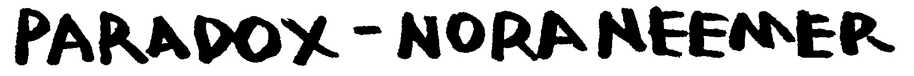
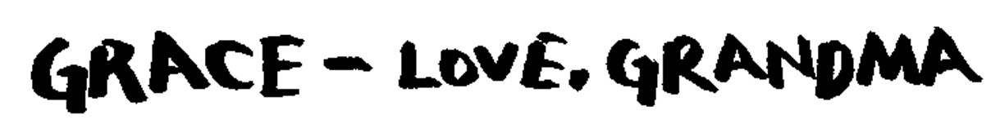
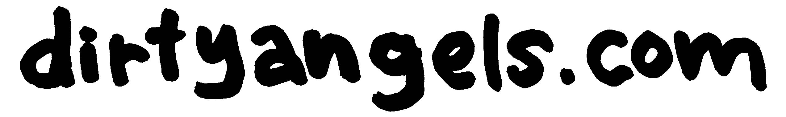
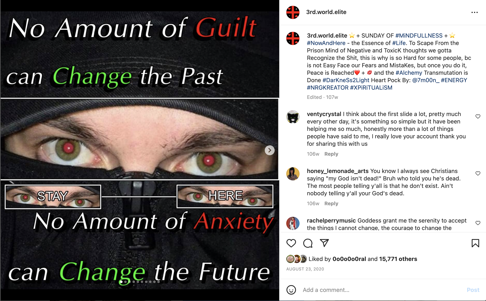
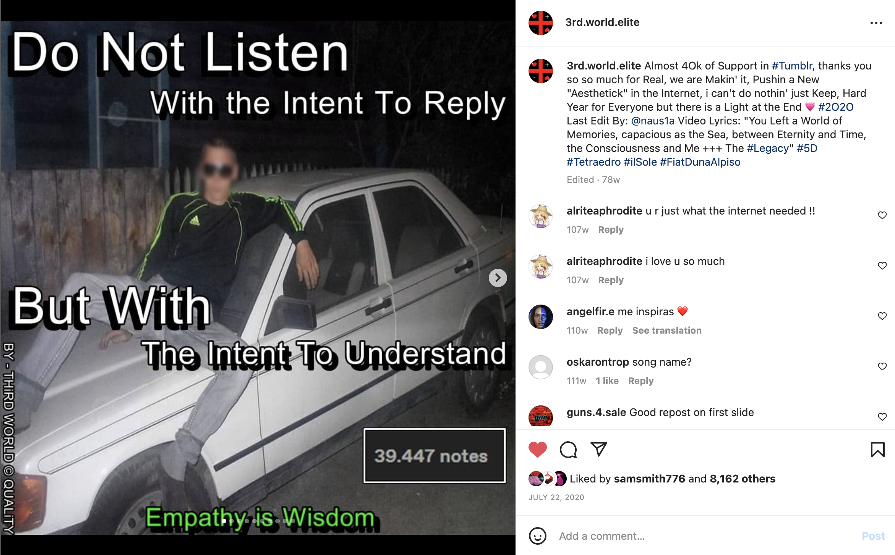
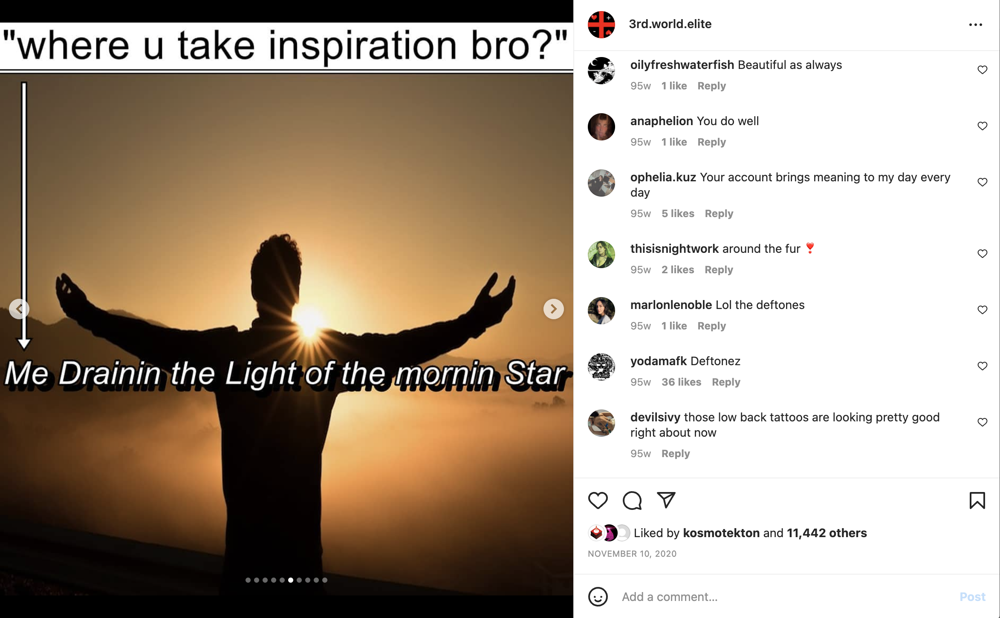

SPOTIFY APPLE MUSIC DECEMBER 2021
nora neemer is a project I work on with one other person. we use this project to indulge in and explore matching different flavors of musical nostalgia to produce a unique version of "pop".
the project's first single,"paradox", takes on bits of late 90s and early 2000s acoustic indie pop, adding unapologetic overproduction to those acoustic instruments akin to that heard in more contemporary underground pop scenes.
credits: full production, mixing, co-writer
hungry - nora neemer
SPOTIFY APPLE MUSIC JULY 2022
"hungry", nora neemer's second single, tends towards more maximalist, high concept hyperpop. while sticking to that barely-two-minute pop song framework, this track tries to fit a much as possible, aesthetically, stylistically, melodically, into to as coherent as possible of a song. my grandma hates it.
credits: full production, mixing, co-writer

SPOTIFY APPLE MUSIC DECEMBER 2020
"indoor swamp" is a 5th-wave-ska-hyperpop-jungle-metal-fishingcore track about a mass exodus taking place at the bass pro shop pyramid in memphis, tn.
credits: full production, mixing, co-writer

SPOTIFY APPLE MUSIC FEBRUARY 2021
"grace" is a song i wrote with my friend in sophomore year of college for a band we were in at the time... some classic college alt-rock with dirty production.
credits: full production, co-writer

FEBRUARY 2021
dirtyangels.com is a hymn for an internet cult, aiming to explore identity formation through emerging digital cultures. it was created based on a prompt to honor the early use of recording technology for archival purposes of religious and folk music.
this track seeks to emulate the sound of early christian hymns, but derives lyrical content from a once thriving instagram page that started a new, radcial, controversial, self help and spirituality movement through the medium of digital irony and early internet visual aesthetics. this song imagines what a hymn from this theoretical 'digital religion' might sound like.
credits: full production, mixing, composer
Once again, the darkness is cleaned, you will not create it again
There's no light without darkness, there¡¯s no learnin' without tears
I will not quit till im truly gone
Dirtyangels.com
Life is not about remember, don't get stuck in to your brain
Let yourself be in the shadows and the rainbow will appear
Nature lover flow till you stop
The internet is here to heal us
Oh earth lover, misses the grass
Aura so strong, it burned the ground




gibson bernath - website design information - last updated: september 2022